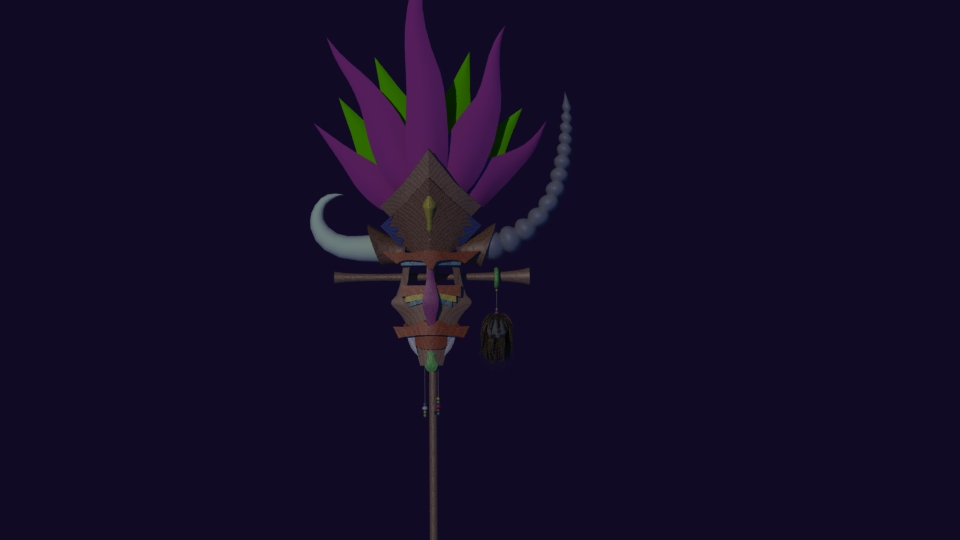
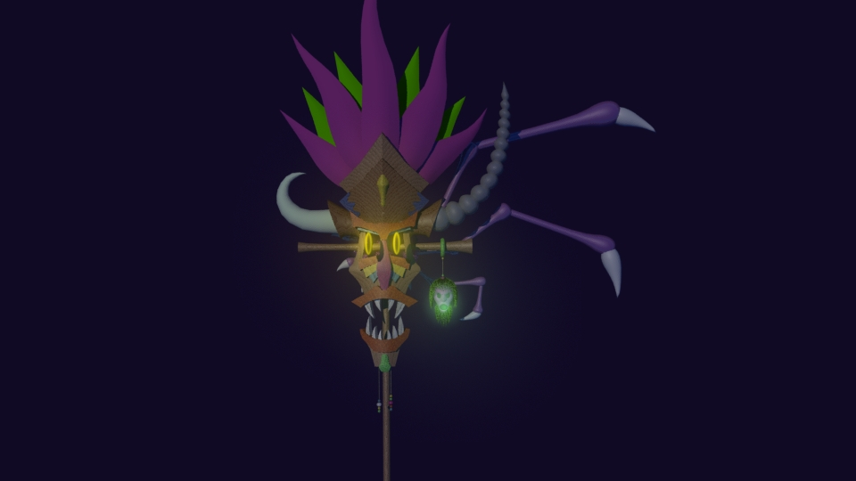
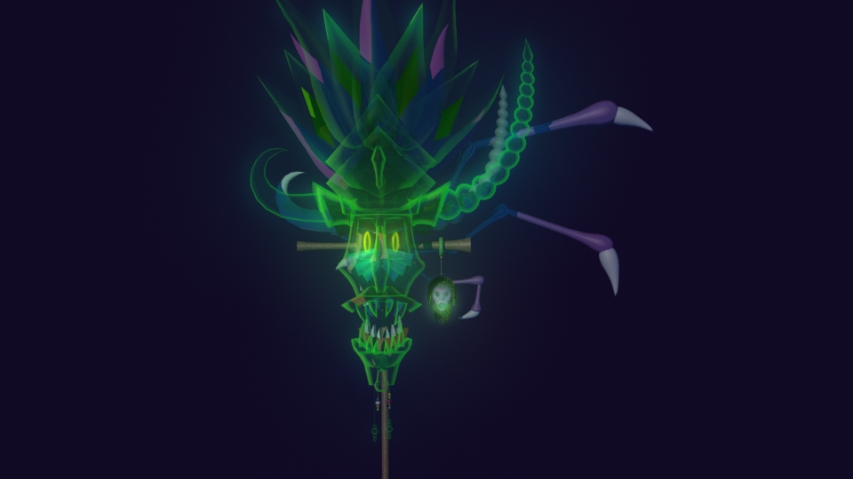
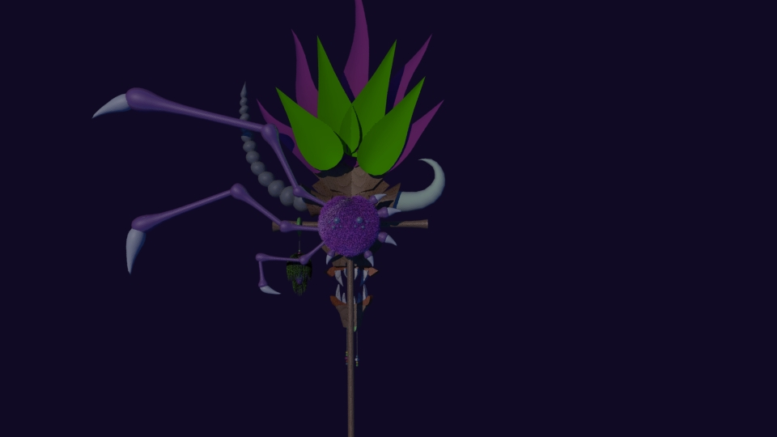
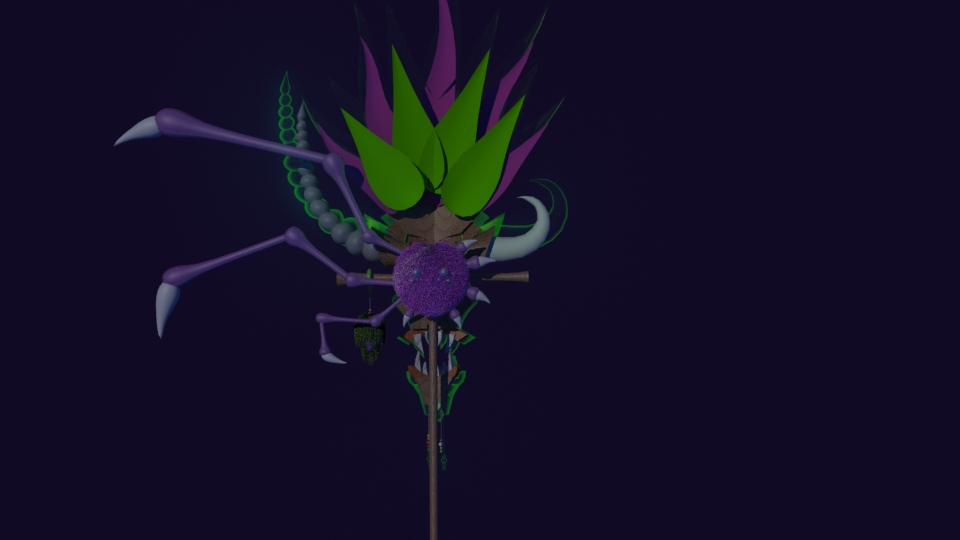
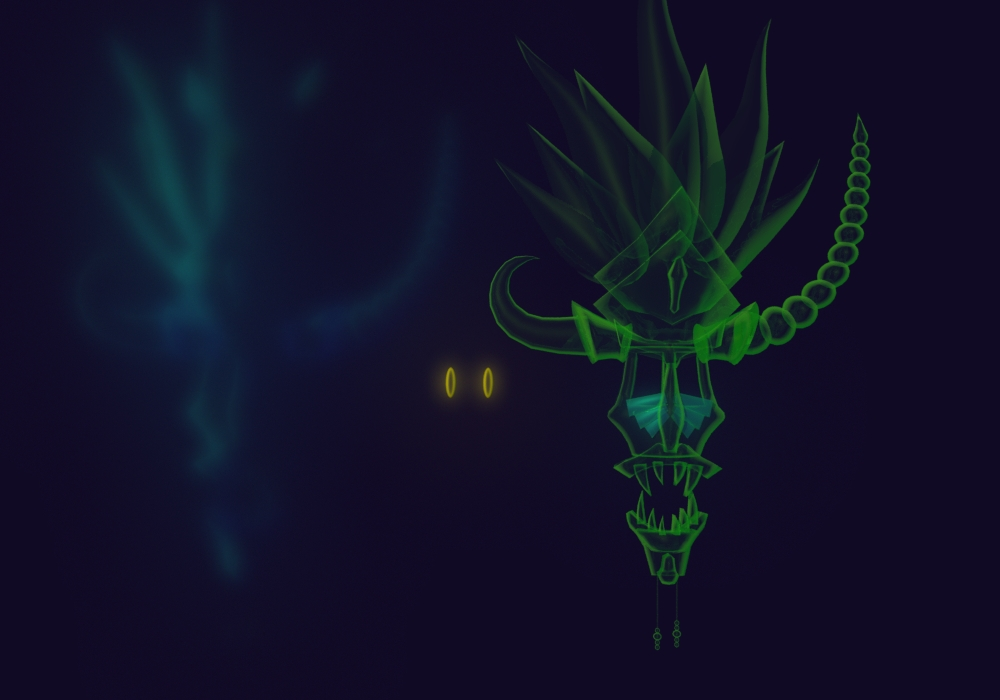

Mask
Finished in November 2014
Reason to create project:
This project was created in free time and just for fun. I got idea of tribal mask haunted by evil spirit.[1]
Another reason was that I wanted to find out how to make something that looks like spirit (semi transparent with glowing outlines).
About project:
Project was created in Maya 2014 (Student licence), rendered by Mental Ray
Scene contains tribal mask attached to wooden cross. There are 3 versions of the mask. First one is calm, ordinary mask. Second one is angry possessed mask. This one has slightly shaped parts (lips, brows).
Shrunken head on the pole is transformed in this form to more haunting one. This mask has also asymmetrical furry spider (Spinner) attached to the back.
Third mask is ghastly apparition. This one is created by invisible mask with post-processed glow, mask with Fresnel effect applied to transparency and high reflectivity and glowing irises.
Third mask is supposed to fly in front of the 2nd mask.
All textures used in this project are Maya 3D wood textures.
Scene is expected to be used in Maya. Exported .fbx file probably doesn't have all the functions or correct look. (.fbx scene is just for preview or to access models even without Maya)
[1] I got this idea while reading some article about African tribal masks.
Renders:






Concept Arts: